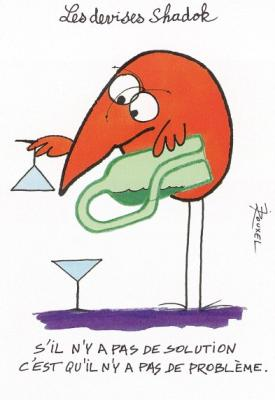

Page 2 de mon site
Ma page 2
S’apelle
p2.html
;
Se trouve dans le dossier
html
de mon site.
Mon image sur la page 2

Mon menu sur la page d’accueil
Un lien vers la page 1
Un lien vers la page 2
Un lien vers ma nouvelle page
Retour vers la page d’accueil